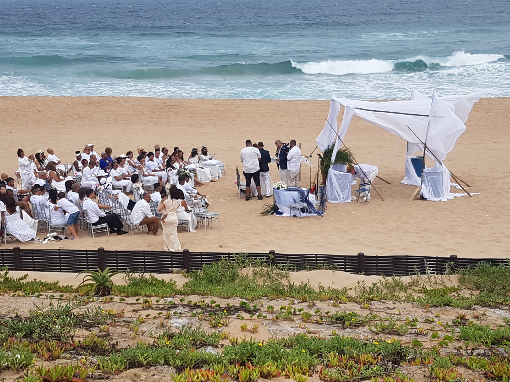

If Haute Food Festival is part of your Durban weekend, sort the timing, transport and return before you leave the Bluff so the food remains the main event.

Pick your festival window first
The event runs across three days, so the best plan starts with one question: when do you actually want to be there? Friday suits an afternoon or evening visit, while Saturday and Sunday give you more daytime flexibility.
Our view is that a food festival is better when you give it a clear block of time. Turning it into one stop between two other fixed bookings makes the day feel rushed before you have even chosen what to eat.
We also think the best time window depends on the experience you want, not just on when the gates are open. A daytime visit gives you more room to browse without watching the clock, while an evening visit may feel more social. The important thing is choosing deliberately rather than arriving with no idea how long you want to stay.
Decide how you want to get there and back
Kingsmead is in central Durban, so check live traffic and parking information close to departure. If you use an app-based ride or taxi, save the venue and guesthouse addresses before leaving.
The return matters more than people expect. A busy festival can finish with many visitors leaving at once, so choose your return method before you arrive. Our Durban transport guide from the Bluff can help you compare driving, rides and shuttles.
Our preference is to make the trip home part of the plan before the first plate of food. That sounds overly organised until the event is busy and everyone is leaving together. A clear return plan gives you more freedom while you are there because you are not solving transport when you are tired.
Do not arrive with a rigid food list
A food festival works differently from booking one restaurant. You may find a queue, a dish that sells out or something unexpected that looks better than your original plan.
Set a spending range and choose two or three things you most want to try, then leave room for one unplanned choice. We think that balance makes the visit feel intentional without turning it into a checklist.
There is a useful principle behind that approach: spend your attention before you spend all your money. Walk a little, compare what is available and then decide. At a festival, the first good-looking option is rarely the only good-looking option.
Use the Bluff for the slower part of the day
If the festival is your main event, keep the rest of the day lighter. A beach walk, a slower morning or time at the guesthouse can work better than stacking another major Durban attraction around the same outing.
For ideas close to your base, see our things to do near the Bluff. If weather changes, our rainy-day guide gives you alternatives.
We think this contrast makes the day better. A slower start on the Bluff and a busier city event later gives each part of the day a different feel. Trying to make both halves high-energy usually just makes the whole day feel long.
Plan the meal strategy before you go
Because the festival itself is about food, avoid eating a heavy meal just before leaving unless that suits your group. Decide whether the festival is replacing lunch, dinner or both.
If you have children or anyone with dietary needs, check current vendor information where available and keep a backup plan. Our meal-planning guide can help you structure the rest of the day.
Our view is that the festival should replace a meal, not accidentally sit between meals. If you arrive after eating properly, you may not want to try much. If you arrive too hungry, the first queue can make everyone impatient. A light meal before or a clear plan to eat at the event usually works better.
Give the festival one clear purpose
Decide what would make the visit feel worthwhile before you go. It might be trying new food, spending time with friends, giving the children a different outing or simply seeing a major Durban event while you are in the city.
We think that one decision helps more than a long list of stalls. Once you know why you are going, it becomes easier to choose how long to stay, how much to spend and when to leave. Not every festival visit needs to become an all-day mission.
That also makes it easier to stop when you have had enough. There is no prize for staying until closing time. If the food was good, the group enjoyed itself and the trip back is still manageable, leaving at the right moment is part of a good day.
A five-check festival routine
- Recheck the event hours for the day you are attending.
- Confirm ticket or entry terms.
- Check live traffic before leaving.
- Choose your return method in advance.
- Decide whether the festival is your main meal.
FAQ: Haute Food Festival from the Bluff
When is Haute Food Festival in Durban in 2026?
Current Durban listings show the festival at Hollywoodbets Kingsmead Cricket Stadium from 2 to 4 October 2026. Check the latest organiser details before travelling.
What should I decide before leaving the Bluff?
Choose your arrival window, transport, spending approach and return method. Recheck hours and ticket terms on the day.
Should I plan another big activity on the same day?
Usually not. Give the festival enough room in the day so you are not rushing between timed plans.
Ask 4Shore about your stay
Winston is the owner and host of 4Shore Guesthouse and the person guests can contact directly about rooms, rates, availability and practical questions. 4Shore Guesthouse is at 28 Foreshore Drive, Ocean View, Bluff, Durban, KwaZulu-Natal, 4052. Call +27 83 254 4825 or email 4shoredurban@gmail.com.